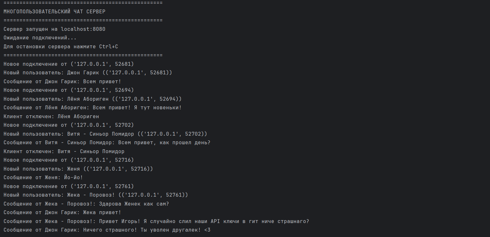
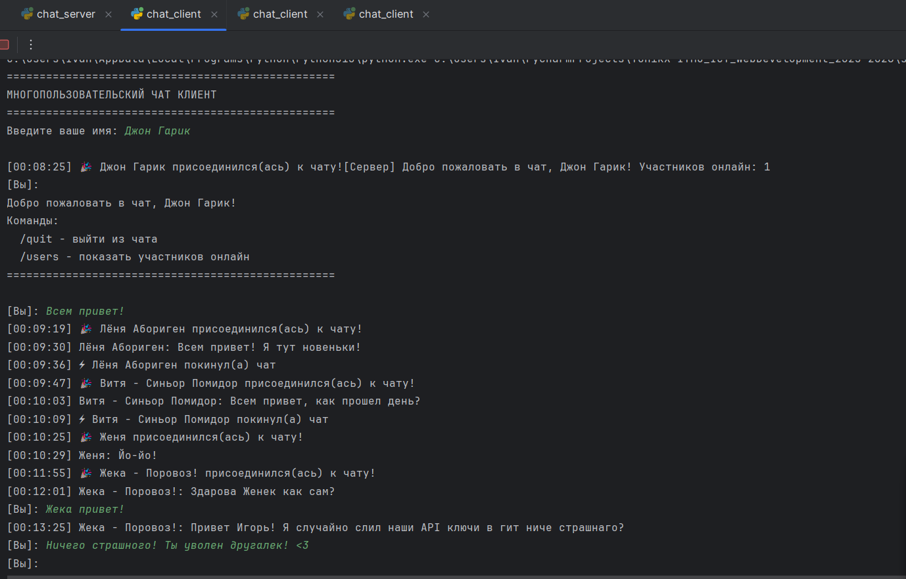

Задание 4
Цель¶
Реализовать многопользовательский чат на базе TCP-сокетов с обработкой каждого клиента в отдельном потоке.
Требования: использовать socket и для обработки нескольких подключений threading.
Выполнение¶
Так-как требовалось разработать многопользовательскую систему чата, состоящую из серверной и клиентской частей, позволяющую нескольким пользователям обмениваться сообщениями в реальном времени, предоставлю принцип работы ниже: Принцип работы сервера
Инициализация сервера
Создание TCP-сокета и привязка к указанному адресу и порту
Инициализация структуры для хранения информации о подключенных клиентах
Обработка подключений
Сервер переходит в режим прослушивания входящих соединений
Для каждого нового клиента создается отдельный поток
При подключении клиент отправляет свое имя пользователя
Управление клиентами
Сервер хранит информацию о всех подключенных клиентах
При присоединении нового пользователя рассылается уведомление всем участникам
При отключении клиента он удаляется из списка и рассылается соответствующее уведомление
Маршрутизация сообщений
Сервер получает сообщения от клиентов и транслирует их всем остальным участникам
Сообщения форматируются с добавлением временной метки
Реализована обработка специальных команд (например, /quit)
Обработка ошибок
Корректное удаление отключившихся клиентов
Защита от обрывов соединения
Клиентская часть Функциональность клиента
Установление соединения
Подключение к серверу по указанному адресу и порту
Авторизация с помощью имени пользователя
Двунаправленная коммуникация
Основной поток: отправка сообщений, введенных пользователем
Фоновый поток: асинхронное получение сообщений от сервера
Интерфейс пользователя
Отображение системных уведомлений и сообщений других участников
Поддержка специальных команд для управления чатом
Форматированный вывод с указанием отправителя и времени
Управление соединением
Корректное отключение от сервера
Обработка разрыва соединения
Особенности реализации
Многопоточность: каждый клиент обрабатывается в отдельном потоке
Синхронизация: рассылка сообщений всем участникам чата
Стабильность: обработка различных сценариев отключения
Информативность: уведомления о подключении/отключении пользователей
Масштабируемость: возможность подключения множества клиентов
Протокол обмена
Клиент подключается к серверу и первым сообщением отправляет имя пользователя
Сервер подтверждает подключение и рассылает приветственное сообщение
Далее обмен сообщениями происходит в свободном формате
Для выхода используется команда /quit
Система обеспечивает стабильную работу многопользовательского чата с возможностью реального обмена сообщениями между участниками.
Сервер (TCP + threading)¶
import socket
import threading
import time
from datetime import datetime
class ChatServer:
def __init__(self, host='localhost', port=8080):
self.host = host
self.port = port
self.clients = {} # {socket: {'username': 'name', 'address': addr}}
self.server_socket = None
self.running = False
def broadcast(self, message, sender_socket=None):
"""Отправляет сообщение всем клиентам, кроме отправителя"""
timestamp = datetime.now().strftime("%H:%M:%S")
formatted_message = f"[{timestamp}] {message}"
disconnected_clients = []
for client_socket, client_info in self.clients.items():
try:
if client_socket != sender_socket:
client_socket.send(formatted_message.encode('utf-8'))
except:
disconnected_clients.append(client_socket)
# Удаляем отключенных клиентов
for client in disconnected_clients:
self.remove_client(client)
def remove_client(self, client_socket):
"""Удаляет клиента из списка"""
if client_socket in self.clients:
username = self.clients[client_socket]['username']
self.clients.pop(client_socket)
try:
client_socket.close()
except:
pass
# Уведомляем других пользователей
leave_message = f"⚡ {username} покинул(а) чат"
self.broadcast(leave_message)
print(f"Клиент отключен: {username}")
def handle_client(self, client_socket, client_address):
"""Обрабатывает сообщения от клиента"""
try:
# Получаем имя пользователя
username = client_socket.recv(1024).decode('utf-8').strip()
if not username:
client_socket.close()
return
# Сохраняем информацию о клиенте
self.clients[client_socket] = {
'username': username,
'address': client_address
}
# Уведомляем о новом пользователе
join_message = f"🎉 {username} присоединился(ась) к чату!"
self.broadcast(join_message)
print(f"Новый пользователь: {username} ({client_address})")
# Отправляем приветственное сообщение
welcome_msg = f"[Сервер] Добро пожаловать в чат, {username}! Участников онлайн: {len(self.clients)}"
client_socket.send(welcome_msg.encode('utf-8'))
# Основной цикл обработки сообщений
while self.running:
try:
message = client_socket.recv(1024).decode('utf-8')
if not message:
break
if message.strip().lower() == '/quit':
break
# Транслируем сообщение всем
chat_message = f"{username}: {message}"
self.broadcast(chat_message, client_socket)
print(f"Сообщение от {username}: {message}")
except ConnectionResetError:
break
except Exception as e:
print(f"Ошибка при получении сообщения от {username}: {e}")
break
except Exception as e:
print(f"Ошибка обработки клиента {client_address}: {e}")
finally:
self.remove_client(client_socket)
def get_server_info(self):
"""Возвращает информацию о сервере"""
return f"Сервер чата запущен на {self.host}:{self.port}\nУчастников онлайн: {len(self.clients)}"
def start(self):
"""Запускает сервер"""
self.server_socket = socket.socket(socket.AF_INET, socket.SOCK_STREAM)
self.server_socket.setsockopt(socket.SOL_SOCKET, socket.SO_REUSEADDR, 1)
try:
self.server_socket.bind((self.host, self.port))
self.server_socket.listen(5)
self.running = True
print("=" * 50)
print("МНОГОПОЛЬЗОВАТЕЛЬСКИЙ ЧАТ СЕРВЕР")
print("=" * 50)
print(f"Сервер запущен на {self.host}:{self.port}")
print("Ожидание подключений...")
print("Для остановки сервера нажмите Ctrl+C")
print("=" * 50)
while self.running:
try:
client_socket, client_address = self.server_socket.accept()
# Запускаем поток для обработки клиента
client_thread = threading.Thread(
target=self.handle_client,
args=(client_socket, client_address),
daemon=True
)
client_thread.start()
print(f"Новое подключение от {client_address}")
except KeyboardInterrupt:
break
except Exception as e:
print(f"Ошибка при принятии подключения: {e}")
except KeyboardInterrupt:
print("\nОстановка сервера...")
except Exception as e:
print(f"Ошибка сервера: {e}")
finally:
self.running = False
if self.server_socket:
self.server_socket.close()
print("Сервер остановлен")
if __name__ == "__main__":
server = ChatServer()
server.start()
Клиент (TCP + threading)¶
import socket
import threading
import time
import sys
class ChatClient:
def __init__(self, host='localhost', port=8080):
self.host = host
self.port = port
self.socket = None
self.username = None
self.running = False
def receive_messages(self):
"""Поток для получения сообщений от сервера"""
while self.running:
try:
message = self.socket.recv(1024).decode('utf-8')
if not message:
print("\nСоединение с сервером разорвано")
break
print(f"\r{message}\n[Вы]: ", end="")
except:
break
def send_message(self, message):
"""Отправляет сообщение на сервер"""
try:
self.socket.send(message.encode('utf-8'))
return True
except:
return False
def connect(self):
"""Подключается к серверу"""
try:
self.socket = socket.socket(socket.AF_INET, socket.SOCK_STREAM)
self.socket.connect((self.host, self.port))
return True
except:
print(f"Не удалось подключиться к серверу {self.host}:{self.port}")
return False
def start(self):
"""Запускает клиент"""
print("=" * 50)
print("МНОГОПОЛЬЗОВАТЕЛЬСКИЙ ЧАТ КЛИЕНТ")
print("=" * 50)
# Подключаемся к серверу
if not self.connect():
return
# Получаем имя пользователя
self.username = input("Введите ваше имя: ").strip()
while not self.username:
self.username = input("Имя не может быть пустым. Введите ваше имя: ").strip()
# Отправляем имя на сервер
if not self.send_message(self.username):
print("Ошибка при отправке имени")
return
self.running = True
# Запускаем поток для получения сообщений
receive_thread = threading.Thread(target=self.receive_messages, daemon=True)
receive_thread.start()
print("\n" + "=" * 50)
print(f"Добро пожаловать в чат, {self.username}!")
print("Команды:")
print(" /quit - выйти из чата")
print(" /users - показать участников онлайн")
print("=" * 50)
print()
# Основной цикл отправки сообщений
try:
while self.running:
message = input("[Вы]: ").strip()
if not message:
continue
if message.lower() == '/quit':
self.send_message('/quit')
break
elif message.lower() == '/users':
print("Информация о пользователях недоступна в этой версии")
else:
if not self.send_message(message):
print("Ошибка отправки сообщения")
break
except KeyboardInterrupt:
print("\nВыход из чата...")
finally:
self.running = False
if self.socket:
self.socket.close()
print("Чат завершен")
if __name__ == "__main__":
client = ChatClient()
client.start()
Результат¶
Сервер принимает все подключения:

Клиенты по очереди подключаются к чату. Также предлагается вести имя, которое будет видно при отправке сообщения. Все клиенты получают сообщения от других

Вывод¶
Реализован многопользовательский чат по TCP с потоковой обработкой клиентов и безопасной рассылкой сообщений:
Сервер принимает неограниченное число подключений.
Клиенты одновременно отправляют и получают сообщения .